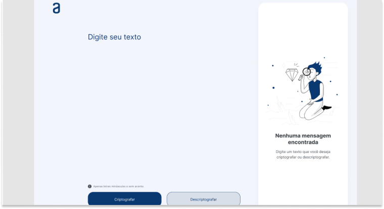
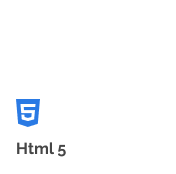

Olá, me chamo Anderson Gustavo.
Antes de iniciar no mercado de trabalho, estudei por 4 anos em um seminário católico
que me proporcionou experiencias ótimas de trabalhos voluntários como formação
para crianças, distribuição de alimentos, palestras pastorais, entre outras experiências
que contribuíram muito para meu crescimento pessoal.
Iniciei minha experiência profissional como desenvolvedor de robôs para automação
de processos em uma empresa de auditoria, onde pude adquirir uma boa experiência
com programação e regras de contabilidade, bem como conhecimentos nas
ferramentas do Pacote Office, principalmente Word e Excel.
Meu ultimo trabalho foi em uma empresa de CRM como analista de integração de
dados, profissão essa que permitiu-me conhecer mais sobre banco de dados e SQL,
com foco em encontrar e corrigir divergências de dados. Na mesma empresa, também
exerci o cargo de analista de suporte por 3 meses, onde pude aprender como analisar
a solicitação do cliente e fazer o possível para entregar aquilo que ele necessita.
Projetos:
-
Desencriptador
 -
Em Breve
-
Em breve
Habilidades:
Aqui trago algumas habilidades e tecnologias de desenvolvimento web, focado no front-end e também alguns hibbies opessoais.
Skills:
-

Linguagem de marcação usada para criar conteúdo para a web.
-
.png)
Linguagem de estilo usada para controlar a aparência e o layout de elementos HTML em uma página web.
-
.png)
Linguagem de programação usada para dar "alma" ao conteúdo de um site.
-
.png)
Biblioteca JS de código aberto para a criação de interfaces de usuário em aplicações web.
.png)
.png)
.png)